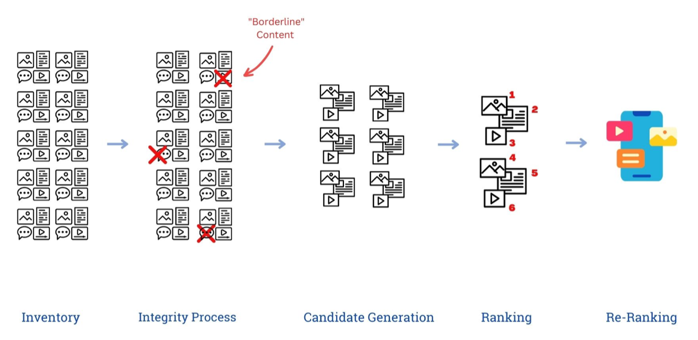

Artificial Intelligence is making waves in the technological world. Nearly everyone has heard discussions about AI, but what exactly is it? How does it work? Where is it being implemented in our society? And why is it something we should be paying attention to? If you're confused about what exactly is artificial intelligence and how it plays a role in our lives, don't worry! You're in the right place. This website covers a wide range of topics relating to artificial intelligence and its implementation--most importantly, providing an understanding of the complex Neural Networks that power the technology of the future.
Below are just a few examples of AI's reach within our society. Each section will go into depth about the technology itself, its history, and what we can look forward to seeing in the near future. A great way to understand how all of these technological feats have been achieved is by understanding the artificial neural networks behind the technology itself, so be sure to check out our interactive example of the simplest form of a neural network, the perceptron!
One of the most prevalent examples of neural networks being used commercially is ChatGPT. It's nearly impossible to go anywhere on the internet without seeing it in use or hearing it mentioned. Created by OpenAI and launched on November 30, 2022, ChatGPT is a powerful language-learning model that can answer questions and have conversations with its users. It is such a landmark in AI technology because of how eerily similar it is to a real person. But how does it work? And how do neural networks play a role in creating a tool as powerful as ChatGPT?
In order to answer these questions, let's first look at the "GPT" in ChatGPT. "GPT" stands for "Generative Pre-trained Transformer". The G and the P are pretty self explanatory--it generates results based off of data it was trained on previously. "Transformer", on the other hand, is less intuitive. It refers to the transformer architecture that ChatGPT is built on. This is where neural network architecture comes into play, as this transformer network is a variant of the traditional neural network architecture. By utilizing "self-attention"
[1] techniques, the transformer is able to revisit words it has already parsed in order to better contextualize their meaning before outputting a response. This is what allows ChatGPT to contextualize input provided by a user in order to provide a (hopefully) helpful response.
It is important to note that, while ChatGPT's output is incredibly impressive, it is not a reliable source of information. Though it is able to pull information from many different online sources, it only will output what it thinks sounds the most "human" without keeping truth in mind. So, be mindful while using ChatGPT! It is but a tool to help you, not a 100% accurate source of information.
Commonly used for entertainment purposes, "deepfakes" are a way to create fake audio and video of a person based off of training data. The first known instance of a deepfake appeared on Reddit in 2017
[2]
, and since then the technology has been made much more accessible through free to download applications on both computers and mobile devices. You may have seen this technology being used in face-swapping applications or filters, as this is one of its most widespread applications. This face-swapping technology is what allows for artificial manipulation of a person's face, as deepfake programs are trained on datasets full of thousands of pictures of different faces with many different expressions taken at many different angles, which is how they can create expressions and movement using just one picture of someone's face.
Neural networks serve as the base for this technology. The output you see in a face swap or in a video of your favorite celebrity wishing you a happy birthday is run through several hidden layers of calculations and weights in order to provide a plausible output. Just like how our brains will feed information through neurons in our brain in order to train us to complete a task, deepfake models feed input information through these layers of neural networks until it reaches a desirable output.
It is important to recognize with deepfakes how quickly entertainment can turn to harassment or cause other unwanted harm, so be careful when utilizing this technology yourself!
Recommendation algorithms are what drive the internet nowadays. Companies want to be able to direct products of all sorts to their users that actually apply to what the user wants. In order to do this in a human-free and therefore efficient manner, neural networks are yet again used to determine what a user might want to click on. These algorithms are trained on vast amounts of user collected behavior and demographic data, as well as data about products themselves.

The process, as outlined by the graphic provided by brookings.edu
[3]
, goes through five steps: inventory, where an algorithm will compile a list of whatever content is being recommended; the integrity process, where potentially problematic or "borderline" content is filtered out; candidate generation, where inventory is heavily filtered down into a few hundred or maybe thousand candidates; ranking, which ranks the remaining inventory using deep-learning models; and depending on how reliable the original ranking is, a model may re-rank each option before finally delivering recommendations to the user. Another important part of some recommendation algorithms is a recommender function, which takes user data as an input and tries to predict the user's rating in order to better contextualize how much a product may be worth marketing towards a user
[4]
.
This process, as you may have already noticed, follows the basic neural network architecture and expands upon it as well. Not only does the data get filtered through these five different stages, as well as potentially more (every system is different!), each stage passes data through layers of its own neural networks.
Speech is one of the most complex and important parts of human communication. As evidenced by the thousands of different languages spoken across the world, there is seemingly endless manners of vocalization. This is one of the many reasons why automatically recognizing speech is a problem best suited for neural networks to tackle. A key figure in the development of speech recognition technology over the years is IBM, who have been working on developing the technology since the release of their "Shoebox" in 1962. Researchers at IBM have outlined these four key aspects of effective speech recognition technology
[5]
:
Of course, all of these aspects are what neural network technology aims to do. We have the ability to train programs on so much conversational audio, and with the amount of variation there is within the training data that is out there and available, much higher standards of voice recognition are present today. This technology is incredibly useful, especially for accessibility for those who are deaf or hard of hearing.
Whether or not we will reach a point where AI is capable of creating artwork of its own is debatable, but with recent developments in the technology it seems like this reality is not too far off. While there are clear entertainment examples of AI generated artwork, especially with the recent popularity of DALL-E 2, many are wondering if AI is able to create its own style of artwork. This debate is prevalent within artistic communities that are largely online, as many people are concerned that AI is stealing people's styles and replicating their artwork. There are definitely examples of blatant art style theft out there, but in 2017 a group of researchers created a new model of neural network in order to try and let AI generate its own style of art: the Creative Adversarial Network (CAN)
[6]
.
CANs build off of existing Generative Adversarial Network architecture. A Generative Adversarial Network, or a GAN, features two separate neural networks: a generator, which attempts to generate novel images, and a discriminator, which attempts to determine whether the output of the generator is real or generated. These two networks work in tandem to create images that look more and more realistic as more iterations pass. Where CANs deviate from the GAN architecture is, in every generation of testing, the generator pushes the boundaries of what is accepted by the discriminator, in hopes of generating its own style distinct from training data. And, in a study conducted by these researchers, they found that while a large majority of output images were distinguishable from real artwork, there were a few cases where real human subjects were unable to tell AI artwork from human artwork. This was when CAN technology was in its infancy, and as time has gone on more companies and researchers have built off of this CAN architecture to create programs such as DALL-E 2.
Using advancements in deep learning technology, fields of all kinds are looking to implement image classification technology. Advanced image classification technology allows for much more data collection in a visually growing online world. As well as data gathering, image classification can also be used in medical imaging, improved automated driving technology, satellite imagery, and much, much more.
The company viso.ai, who are at the forefront of publicly available image classification technology, utilize convolutional neural networks (CNNs) within their software
[7]
. The CNN is, of course, built around the standard deep neural network framework. CNNs, however, are more inspired by optical systems within the human body. CNNs also are largely unsupervised models, meaning there is little to no need for human intervention when working with CNN technology. This allows the model to potentially make observations within an image that a human or human-supervised program would have missed, which is why carefully crafted unsupervised neural networks are driving the field of image classification today.